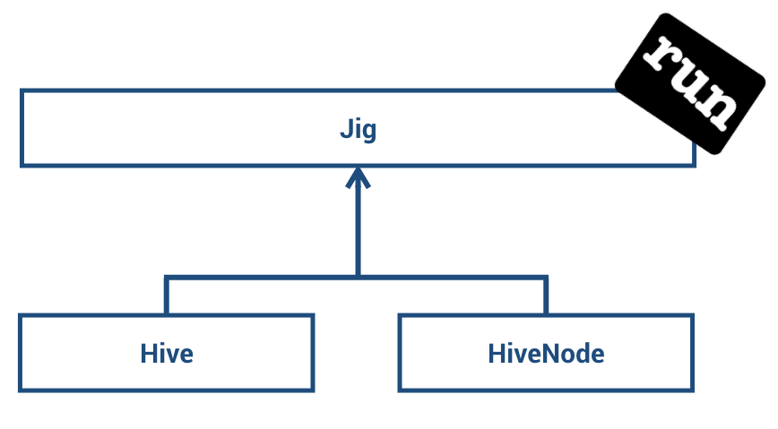
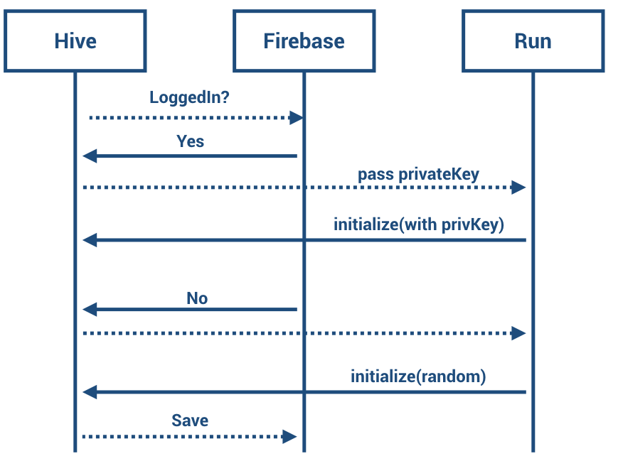

A platform that acts as a “beehive” of connecting information - where each individual adds connections and new information or other media. Each “Hive” exists of objects (Run/Jiggs) that contain information and have pointers to other objects. Those objects can contain weblinks. If different hives connect, it might become like an interactive book that always lets you go on routes that you might want to read more about next.
The hive application can be forked, cloned or downloaded through github:
Hive on githubAfter you've cloned the project, run the following commands to get a local instance of the application:
yarn install
yarn start
Your default browser should open now and show 'http://localhost:3000'
We built the application on the basis of reactjs and created the template using the create-react-app. Using the run framework we were able to store and retrieve objects on the bitcoin blockchain using the so called 'Jigs'. In order to display the hives and its nodes, we used react-graph-vis.
For more information, please see run
The Hive app currently stores two object (as jigs) on the blockchain:
Hives can be created to bundle multiple hive nodes.
Hive nodes contain the main data of the hive. They can get linked and together they build the actual hive.
To create a jig one has to extend from the Jig class. After creation of the jig, the tx gets sent and the jig will get included on the chain.
We inherited Hive and HiveNode from the Jig Class and store it on the blockchain. No additional persistence needed.
At the start of the application one has to create a hive. A hive is described by a name, description, owner, category, satoshis and an image url. The run framework creates a transaction immediately once a user has added a hive (and has sufficient balance to do so). If the user navigates into the hive, he or a third party can create Nodes that get added to that hive. Thus a node contains the information of the parent Hive as well as an optional link to a different node. Using those links a whole (bee)hive can be created.
A hive is defined by the following attributes:
| Attribute | Description |
|---|---|
| name | Title of the hive |
| description | Description of the hive |
| owner | Whoever created the hive |
| Category | Category of the hive (Politics, Cryptocurrency, ...) |
| Satoshis | The creater of the hive can spend a specific amount of satoshis, that will be distributed among all the contributers of the hive (e.g. the ones that create HiveNodes) |
| Image | The url of the image that will be displayed in the Hive app |
A HiveNode is defined by the following attributes:
| Attribute | Description |
|---|---|
| name | Title of the hive-node |
| description | Description of the hive-node |
| owner | Whoever created the hive-node |
| Url | The url that references to the article described in the hive-node. |
| Image | The url of the image that will be displayed in the hive-node |
| Hive Origin | The hive that the node belongs to |
| Previous node | Optional parameter: if set, a link gets created between this node and the previous node, thus creating a hive-like structure. |
If a user isn't logged in, he will get some random key pairs, provied by the run framework. After login, he can then set those keypairs to his account. After login, he will use the same keypairs and is able to transfer funds into his account.
Use run without login (creates random keys, which is sufficent to read on the blockchain)
Use run with login (using existing private keys to connect to the blockchain)
The app defines a prefix, which later can used to query the blockchain.
In order to get all the transactions that MAY represent a run transaction AND might be a transaction related to hive, we used the following approach:
In order to improve the application, the team already has the following ideas: